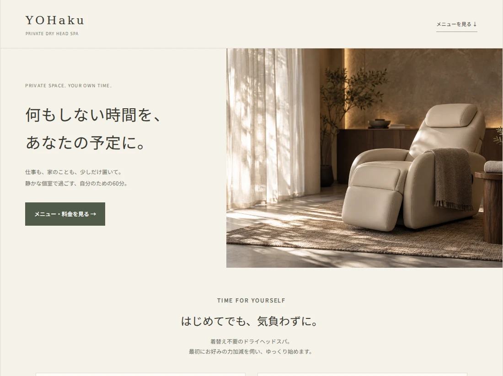
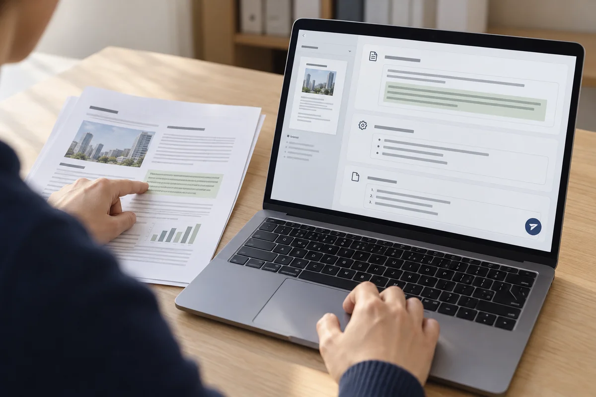

01 / BUSINESS IMPROVEMENT
AI活用・業務改善
毎回の転記、会議後の議事録、散らばった情報。今の手順を整理し、人が確認しながら使える仕組みを考えます。
- 議事録・文書の下書き作成
- 名刺・顧客情報の整理
- 経費の入力・集計支援
LOCAL BUSINESS, NEXT STEP.
御殿場・静岡東部〜中部の事業者さまへ
御殿場・静岡の中小企業・個人事業主のための
AI業務改善と、ホームページ制作。
日々の手作業も、お客様への伝え方も、一緒に整えます。
業務改善だけ、ホームページ制作だけのご相談も歓迎です。
OUR SERVICES
目的に合わせて選べる、2つの支援。必要なところから始められます。
01 / BUSINESS IMPROVEMENT
毎回の転記、会議後の議事録、散らばった情報。今の手順を整理し、人が確認しながら使える仕組みを考えます。

02 / WEBSITE PRODUCTION
「何を頼める会社か」が伝わり、問い合わせにつながるサイトへ。新規制作も、既存サイトの見直しもご相談ください。
FREE / BUSINESS AI CHECKUP
御殿場・裾野の事業者さまへ。
いつもの業務について選ぶだけで、
改善の候補と、具体的な始め方を整理できます。
報告書、メール、入力・転記など。回答に応じて、優先して改善したい作業を整理します。

02 / 試す作業の内容に合わせた具体的な指示文をコピー。必要な資料を用意して、AIで試せます。
用意するもの、試す手順、人が確認することまで。診断結果は印刷やPDF保存にも使えます。
選択式で回答できます。回答はサーバーに送信・保存されません。診断結果は改善の目安です。
OUR APPROACH
大切にしているのは、ツールの新しさよりも、
あなたの仕事が少しでもラクになることです。

既存の業務を整理し、優先度の高い作業から。大規模な開発を前提にしません。
AIが初めてでも大丈夫。実際のメールや資料を題材に、使い方を具体的に整理します。
日々の効率化から制作・集客まで。事業全体を見ながら、必要な支援をご提案します。
02 / OUR WORKS
その手作業、
こんな仕組みに変えられます。
名刺の整理、会議後の書類、月末の経費。
身近な仕事から、改善のかたちをご紹介します。
掲載中の3件は、架空データを使った制作デモです。実際の導入実績・削減効果を示すものではありません。
 01
01CONTACT MANAGEMENT
 02
02DOCUMENT WORKFLOW
 03
03EXPENSE MANAGEMENT
制作実績：顧客へ納品し、運用されたもの。自社開発：自社業務で使用しているもの。制作デモ：検証・紹介のために制作したもの。
制作デモはさらに「開発サンプル」と「検証済みデモ」を区別します。現在の3件は開発サンプルです。画面操作の確認と、AIを含む業務全体の検証・効果測定は別に扱います。
CREATIVE WORKS
店舗LPの構成・デザインをご覧いただけます。掲載作品は制作サンプルです。HPのページ構成は、目的と掲載内容に合わせてご提案します。
今の手順をお聞きして、小さく試せる改善案を一緒に考えます。
03 / PRICE
ご予算や課題に合わせて、必要な支援だけをご提案。
無理な導入や、不要なツール契約を前提にしません。
0円
制作費・初期設定費と、保守費・外部サービス利用料の有無を分けてご案内します。範囲と費用に合意してから着手します。
04 / HOW IT WORKS
課題の整理から、その後の運用までサポートします。
業務の内容、困っていること、今お使いのツールをお聞きします。
AIで改善できる作業や制作物を整理し、優先順位を決めます。
支援内容と費用、進め方をわかりやすくご案内します。
AIの設定や使い方の整理、必要な制作物づくりを進めます。
実際に使ってわかった課題を確認し、改善につなげます。
ABOUT AI_PARTNER
AI_Partnerは、御殿場・静岡東部〜中部の事業者さまに向けて、AI活用・業務改善とホームページ制作を支援します。ツールを決める前に、今の仕事や届けたい相手を伺うことを大切にしています。
困っている作業、サイトの目的、現在使っているツール、ご希望の時期を伺います。資料や要件がまとまっていなくても大丈夫です。対応範囲と次の進め方を一緒に整理します。
納品後の修正・保守・操作案内の範囲は、ご契約前に確認します。
05 / FAQ
はい。専門用語を使わず、普段の業務にどう使えるかから一緒に整理します。
可能です。会社の規模にかかわらず、業務内容やご予算に合わせて支援内容をご提案します。
御殿場・静岡東部〜中部を中心に、内容によってオンライン相談にも対応しています。
はい。ホームページ・LP・チラシ・動画など、必要な制作物だけでもご相談いただけます。
LET’S MAKE IT EASIER.
業務の手間を減らしたい。ホームページを作りたい。
まだ具体的でなくても、ご希望をお聞かせください。